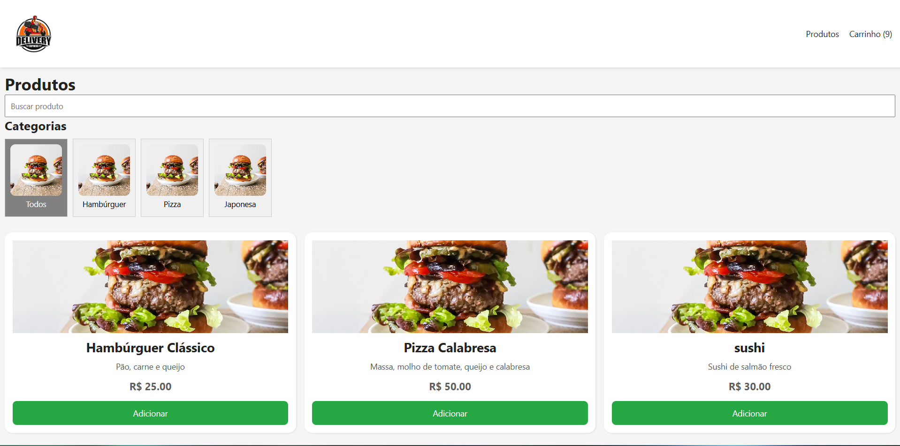
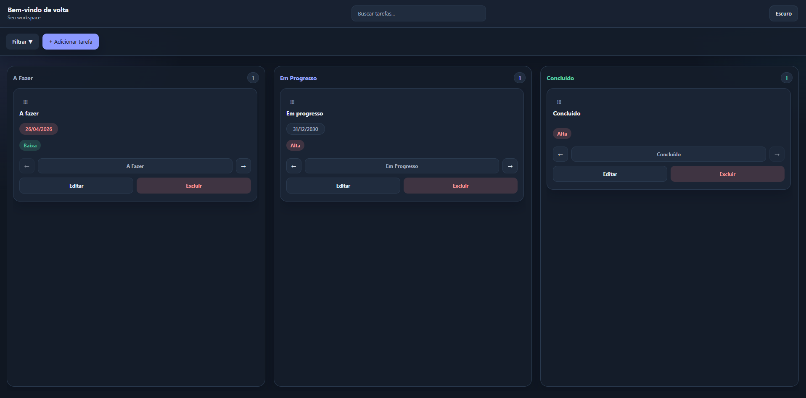
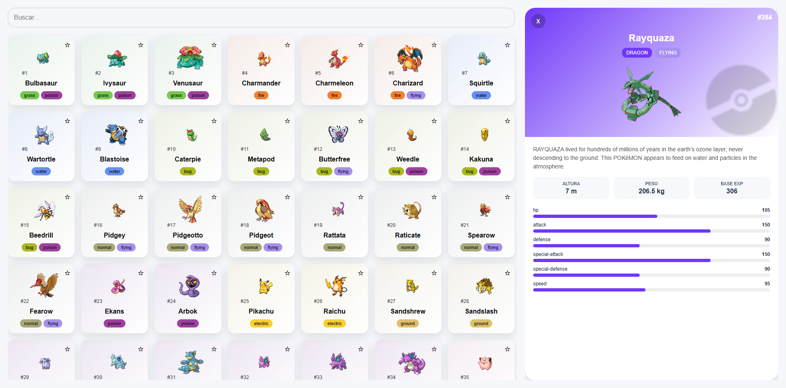

Sobre Mim
Sou estudante de Desenvolvimento Full Stack com foco no ecossistema JavaScript. Possuo conhecimentos em HTML, CSS, JavaScript, TypeScript, React, Node.js, Express e PostgreSQL.
Tenho como objetivo desenvolver aplicações completas, desde a interface do usuário até a construção de APIs e integração com bancos de dados. Busco constantemente aprimorar minhas habilidades através de projetos práticos e estudo contínuo.
Habilidades
Tecnologias que venho estudando e aplicando em projetos práticos para desenvolvimento de aplicações web modernas.
Front-End
- HTML5
- CSS3
- JavaScript
- TypeScript
- React
- Next.js
Back-End
- Node.js
- Express.js
- APIs REST
- JWT
Banco de Dados
- PostgreSQL
- Prisma ORM
Projetos

